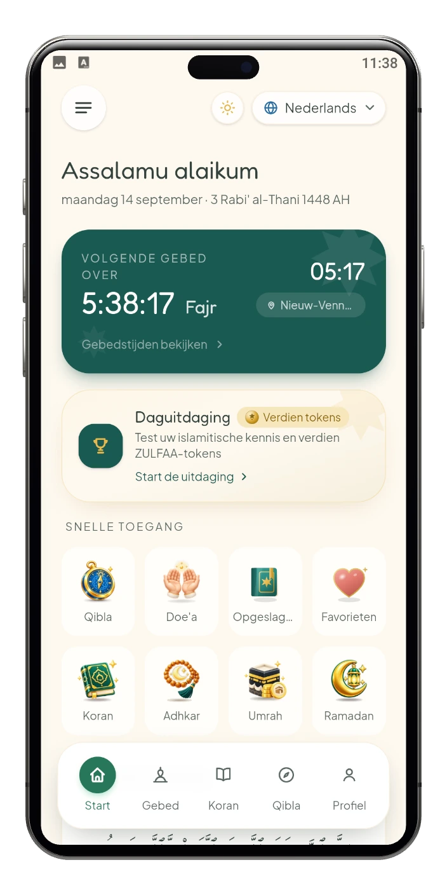
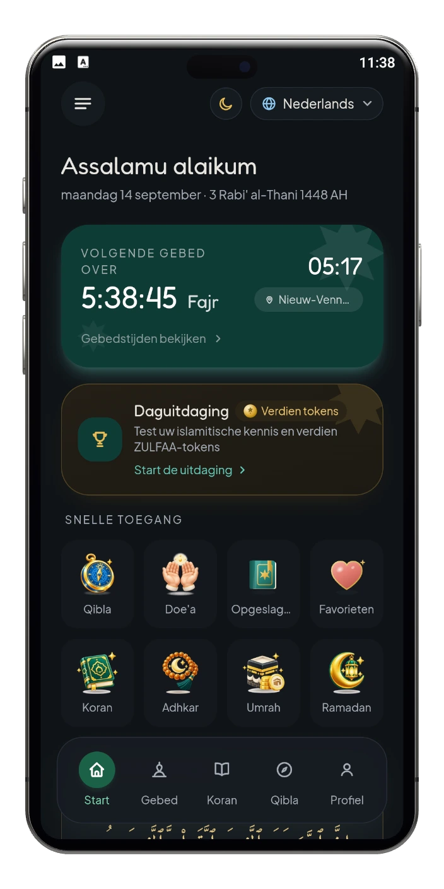

De Nobele Koran
Lees de volledige Uthmani-tekst met een Engelse vertaling, gewoon in de app.
- Bladwijzers en uw leesvoortgang
- Recitatie door een reciteur naar keuze
- Tafsir laadt wanneer u die opent
زُلْفَى
Gebedstijden, de Koran, adhkar en de qibla, berekend op uw eigen telefoon en grotendeels offline.
Geen advertenties of tracking tussen websites.


ZULFAA is een islamitische app die nauwkeurige gebedstijden, de Koran, adhkar en doe'a's en de qiblarichting samenbrengt in één rustige, elegante ervaring. De app werkt eerst op uw apparaat, en het meeste werkt offline.
Op het startscherm van ZULFAA staan acht snelkoppelingen. Kies er een en zie wat die opent.
Lees de volledige Uthmani-tekst met een Engelse vertaling, gewoon in de app.
Ochtend- en avond-adhkar uit Hisn al-Muslim, met een dagelijkse wird om bij te houden.
Doe’a’s geordend per thema, met vertaling en audio.
De richting van de Ka’bah en uw afstand ertoe, berekend op uw apparaat.
Komt in een volgende update, niet in de eerste versie.
Elke ramadandag in één oogopslag: suhoor en iftar uit uw gebedstijden, een aftelling en vijf daden van aanbidding.
Komt in een volgende update, niet in de eerste versie.
Stel een spaardoel voor de umrah en zie wat u opzij hebt gezet, wat er nog ontbreekt en hoeveel dagen er resten.
Markeer de verzen, doe’a’s en adhkar die u dierbaar zijn met een hart, en vind ze bij elkaar.
Sla een vers, doe’a of dhikr op om er later naar terug te gaan. Alles wat u opslaat staat op één pagina.
Eromheen op het startscherm: gebedstijden en herinneringen, berekend op uw telefoon, en een optionele dagelijkse uitdaging.
IN DE APP
ZULFAA op Android — de Koran, de qibla, adhkar, de dagelijkse uitdaging en meer, in het thema dat u voor deze site kiest.

Start

Gebedstijden

De Nobele Koran

Lezen en luisteren

Versopties

Qibla

Adhkar en doe'a

Dagelijkse uitdaging

Uitdagingsvragen

Ramadanplanner

Umrah-sparen

Spaardoel

Meldingen

Uw persoonlijke ruimte

Menu

Hulp en support
01 / 16 · Start
Veeg, sleep of gebruik de pijlen — de pijltoetsen werken ook.
Lokaal eerst
ZULFAA werkt vanaf uw apparaat naar buiten. Wat het van u weet, houdt het daar.
De Koran en de adhkar reizen mee met de app, en gebedstijden en de qibla worden op uw telefoon berekend in plaats van opgehaald.
Opgeslagen items, favorieten, leesvoortgang en uw adhkar-telling blijven op het apparaat. De app vraagt niet om uw echte naam, e-mailadres, telefoonnummer of geboortedatum.
Geen advertenties of tracking tussen websites. We gebruiken beperkte interne analyses om de website te beveiligen en de service te verbeteren.
Recitatie-audio, tafsir en de optionele dagelijkse uitdaging laden alleen wanneer u ze opent.
Contact
Een vraag, een correctie, of iets dat zich vreemd gedroeg op uw telefoon — dit komt rechtstreeks bij de ontwikkelaar aan.
Het formulier is nu niet beschikbaar, maar u kunt ons schrijven vanuit uw eigen e-mailprogramma.